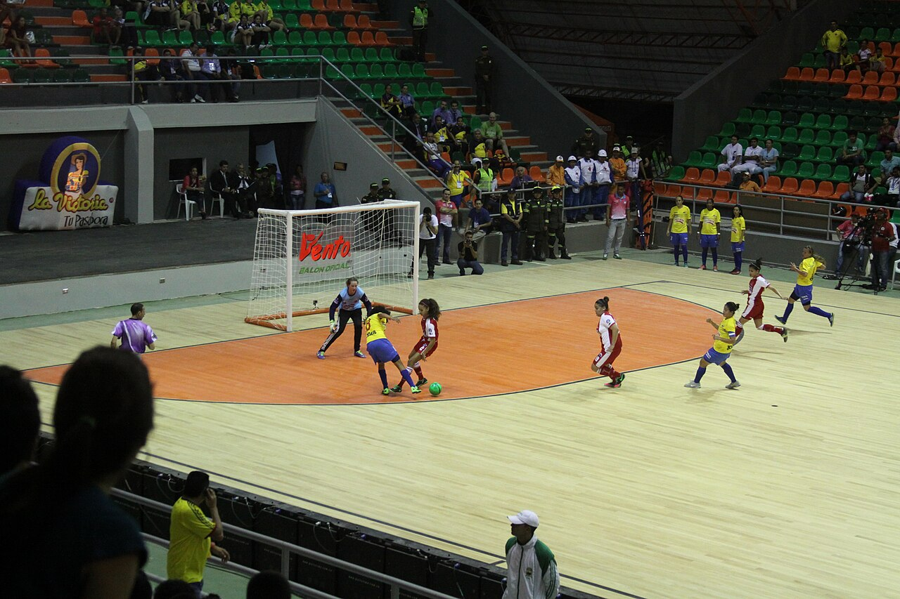

Detalle de la instalación

Pista Cubierta de Fútbol Sala
Instalación interior situada en el pabellón principal, preparada para partidos amistosos, entrenamientos de clubes y ligas locales.
- Dimensiones reglamentarias: 40 x 20 metros.
- Superficie: Parqué sintético deportivo de alta absorción.
- Equipamiento incluido: Porterías reglamentarias, redes y banquillos.
- Servicios: Acceso a vestuarios colectivos y duchas 15 minutos antes.
Tarifa: 15,00 € / hora
Añadir a Mi Reserva